Strategic growth and technical advancement with 8 projects delivered over 2 months, establishing new benchmarks for Australian maritime infrastructure development.
Team ExcellenceSustainable Practices8 Projects DeliveredEnvironmental Compliance
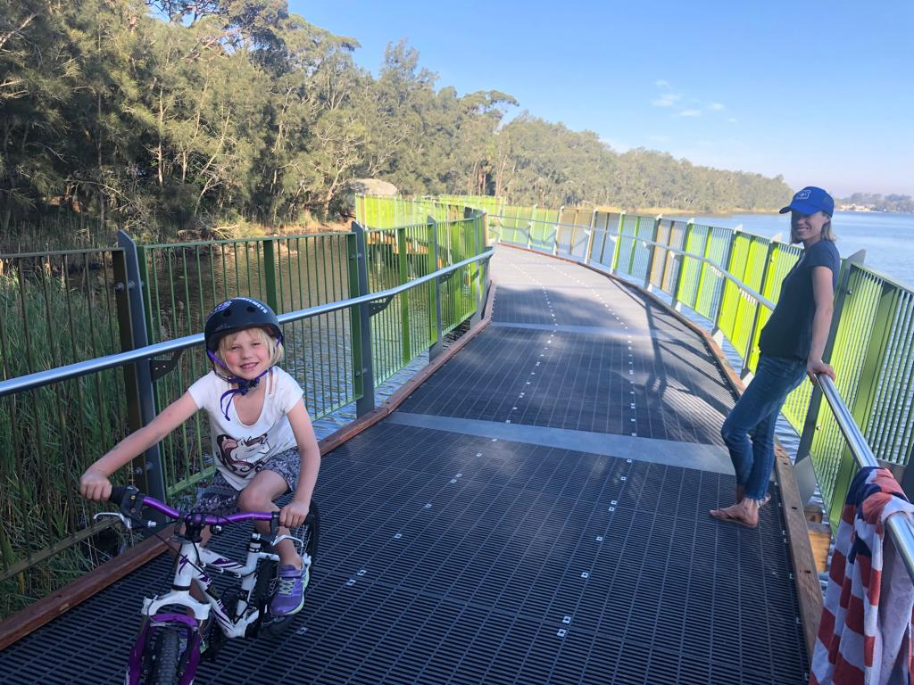
November 15, 2019
Project Lead: Peter Philipp
November 2019 Construction Progress
Successful completion of november 2019 site development demonstrating our commitment to marine engineering excellence and sustainable construction practices.
Impact & Results
Contributed to regional marine infrastructure resilience while maintaining highest standards of quality and environmental stewardship.
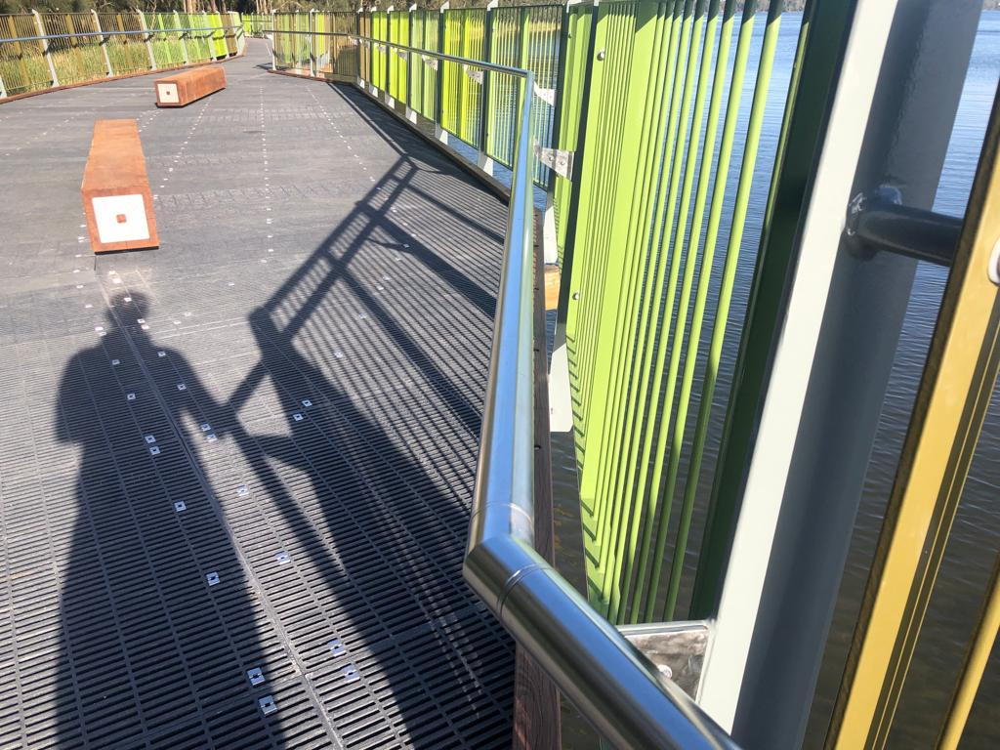
November 15, 2019
Project Lead: Peter Philipp
November 2019 Marine Installation
Professional delivery of november 2019 project delivery highlighting our expertise in complex marine construction projects and dedication to quality outcomes.
Impact & Results
Strengthened maritime engineering standards while supporting local economic growth and creating lasting value for coastal communities.
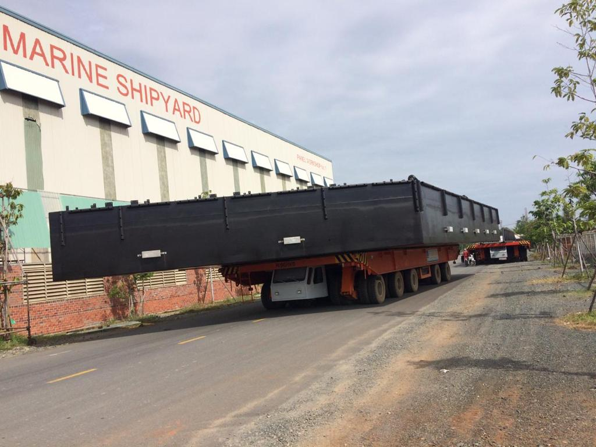
November 29, 2019
Project Lead: Peter Philipp
November 2019 Construction Milestone
Successful completion of november 2019 project delivery demonstrating our commitment to marine engineering excellence and sustainable construction practices.
Impact & Results
Advanced marine infrastructure capabilities, contributing to Australia's coastal development goals and environmental sustainability targets for 2019.
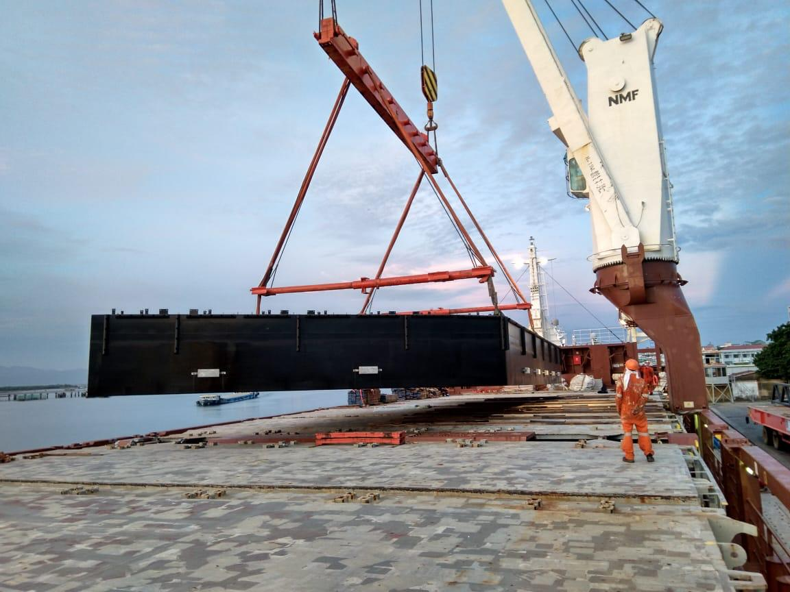
November 29, 2019
Project Lead: Peter Philipp
November 2019 Construction Progress
Strategic implementation of november 2019 marine works showcasing advanced technical capabilities and innovative approaches to maritime infrastructure development.
Impact & Results
Strengthened maritime engineering standards while supporting local economic growth and creating lasting value for coastal communities.
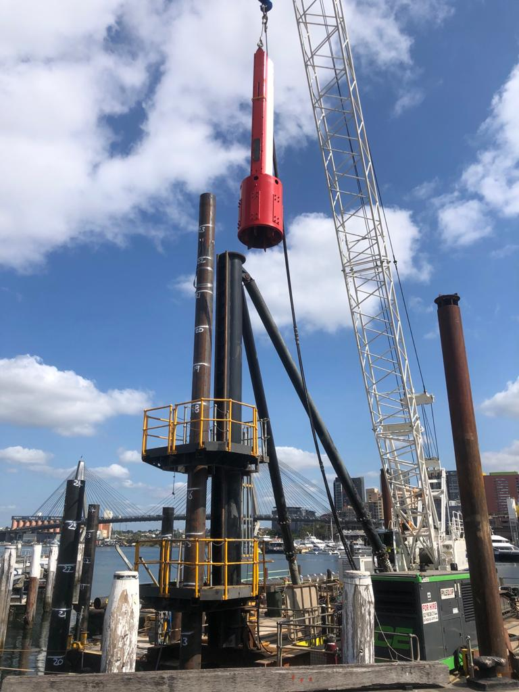
December 17, 2019
Project Lead: Peter Philipp
December 2019 Technical Implementation
Successful completion of december 2019 site development demonstrating our commitment to marine engineering excellence and sustainable construction practices.
Impact & Results
Delivered measurable environmental benefits through innovative engineering approaches and commitment to ecological preservation.
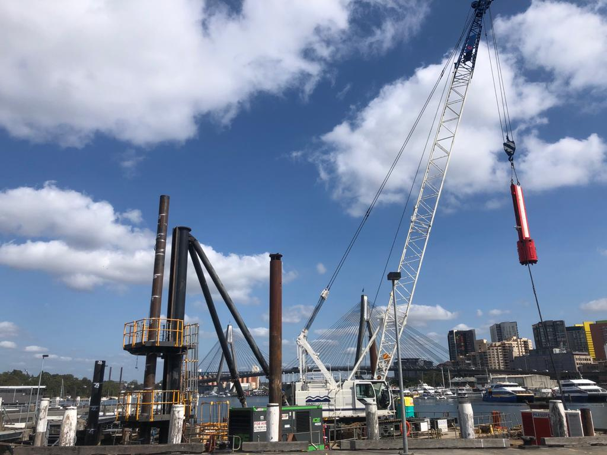
December 17, 2019
Project Lead: Peter Philipp
December 2019 Infrastructure Development
Professional delivery of december 2019 technical implementation highlighting our expertise in complex marine construction projects and dedication to quality outcomes.
Impact & Results
Contributed to regional marine infrastructure resilience while maintaining highest standards of quality and environmental stewardship.
Exceptional performance delivering 64 complex marine engineering projects, demonstrating our commitment to quality, safety, and environmental stewardship throughout 11 months of operations.
Team Excellence64 Projects DeliveredCOVID-Safe OperationsEnvironmental ComplianceSafety ExcellenceAdaptive Solutions
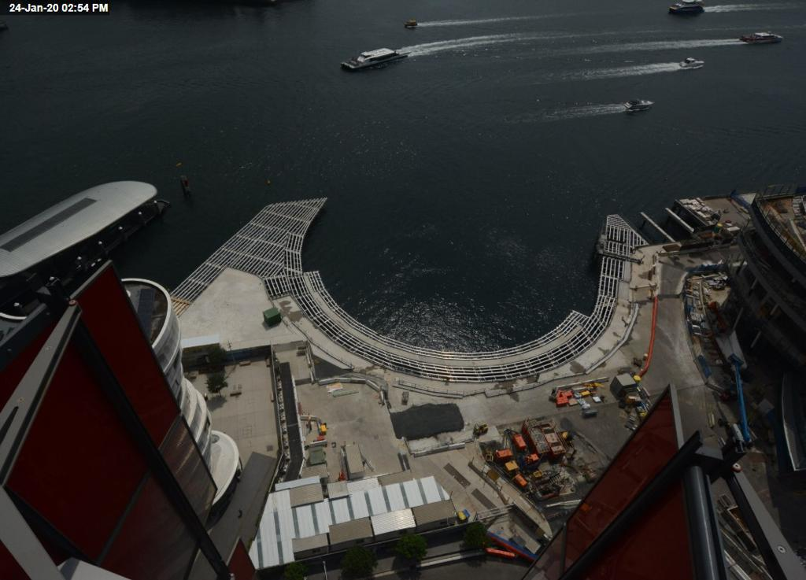
January 24, 2020
Project Lead: Peter Philipp
January 2020 Site Development
Professional delivery of january 2020 marine works highlighting our expertise in complex marine construction projects and dedication to quality outcomes.
Impact & Results
Enhanced operational efficiency and safety protocols, establishing new industry benchmarks for sustainable marine construction practices.
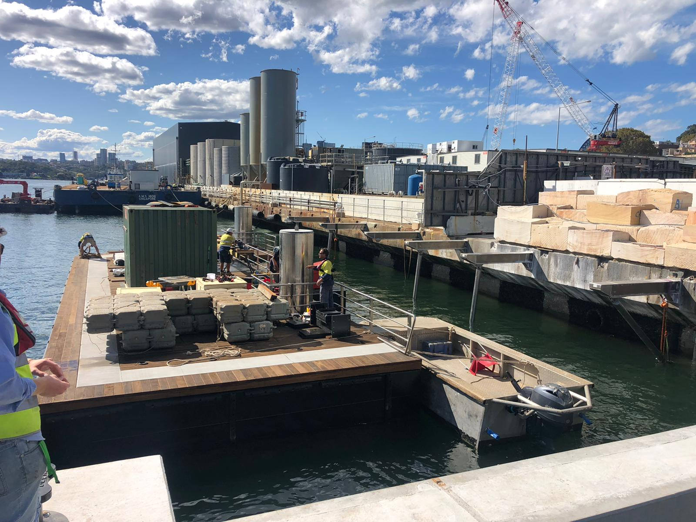
April 06, 2020
Project Lead: Chris Hickey
April 2020 Construction Milestone
Professional delivery of april 2020 construction milestone highlighting our expertise in complex marine construction projects and dedication to quality outcomes.
Impact & Results
Enhanced operational efficiency and safety protocols, establishing new industry benchmarks for sustainable marine construction practices.
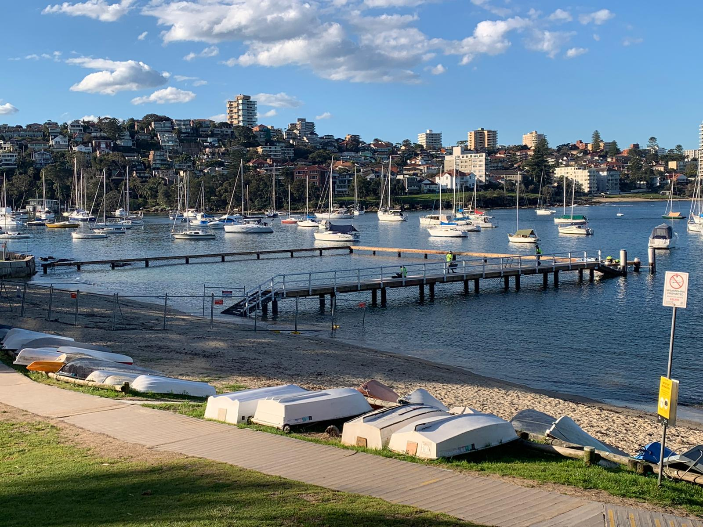
August 13, 2020
Project Lead: Adam Neville
August 2020 Construction Progress
Expert execution of august 2020 project delivery reflecting our industry-leading capabilities in marine engineering and infrastructure development.
Impact & Results
Enhanced operational efficiency and safety protocols, establishing new industry benchmarks for sustainable marine construction practices.
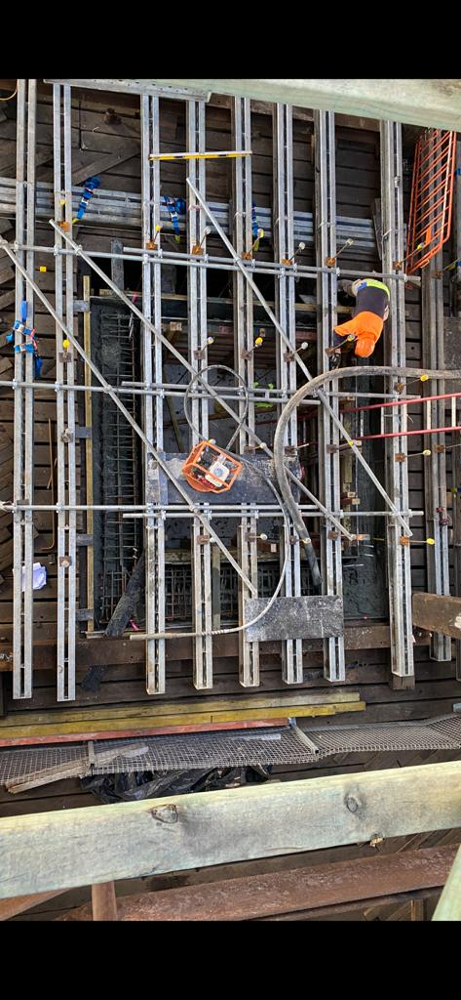
September 10, 2020
Project Lead: Sam SMC
September 2020 Marine Works
Successful completion of september 2020 project delivery demonstrating our commitment to marine engineering excellence and sustainable construction practices.
Impact & Results
Contributed to regional marine infrastructure resilience while maintaining highest standards of quality and environmental stewardship.
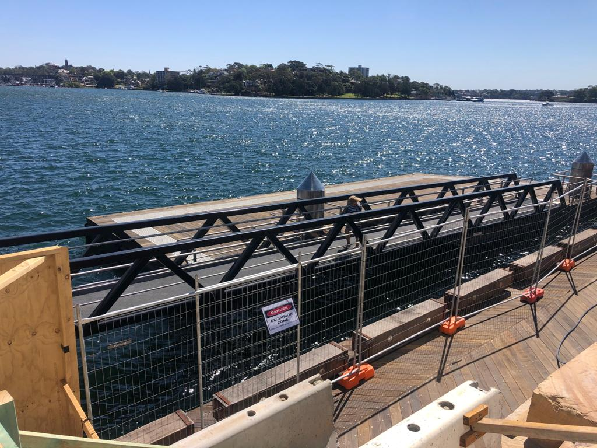
September 22, 2020
Project Lead: Chris Hickey
September 2020 Site Development
Successful completion of september 2020 construction milestone demonstrating our commitment to marine engineering excellence and sustainable construction practices.
Impact & Results
Advanced marine infrastructure capabilities, contributing to Australia's coastal development goals and environmental sustainability targets for 2020.
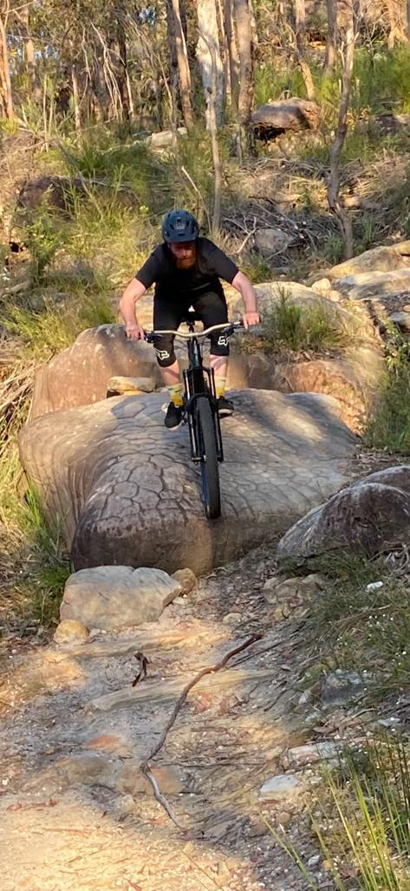
October 21, 2020
Project Lead: Niall Magee
October 2020 Marine Works
Successful completion of october 2020 engineering achievement demonstrating our commitment to marine engineering excellence and sustainable construction practices.
Impact & Results
Advanced marine infrastructure capabilities, contributing to Australia's coastal development goals and environmental sustainability targets for 2020.
A year of exceptional productivity delivering 229 major projects across 12 months, reinforcing our position as Australia's premier marine engineering specialists.
Quality AssuranceClient SatisfactionOperational EfficiencySustainable PracticesAdaptive Solutions12 Months Active
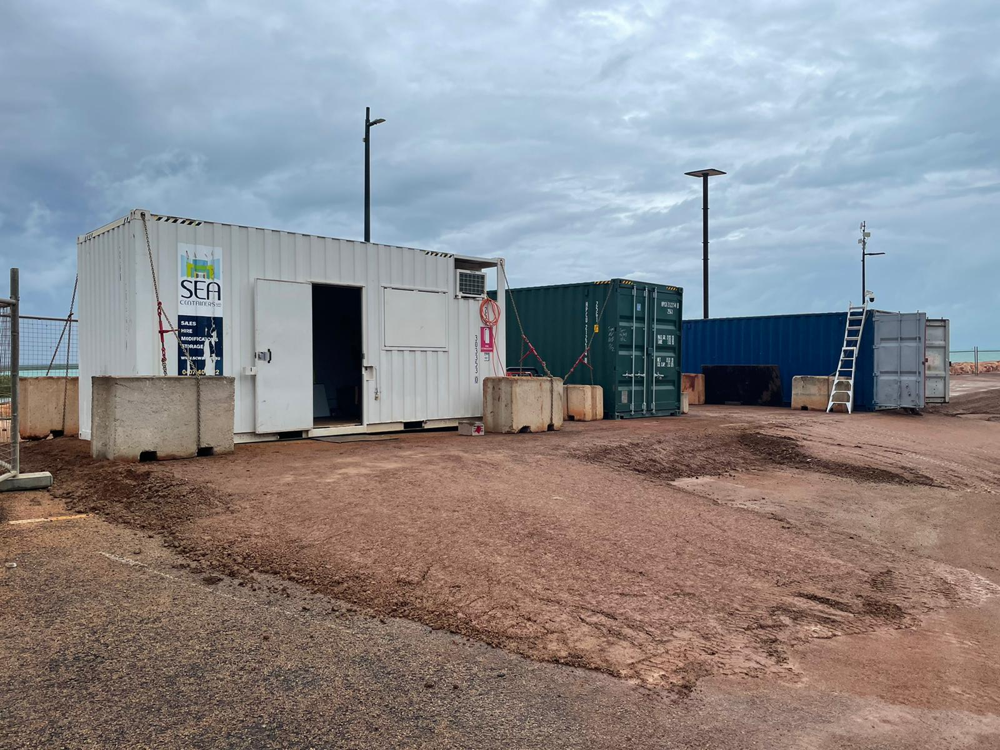
January 21, 2021
Project Lead: Adam Neville
January 2021 Site Development
Strategic implementation of january 2021 marine installation showcasing advanced technical capabilities and innovative approaches to maritime infrastructure development.
Impact & Results
Delivered measurable environmental benefits through innovative engineering approaches and commitment to ecological preservation.
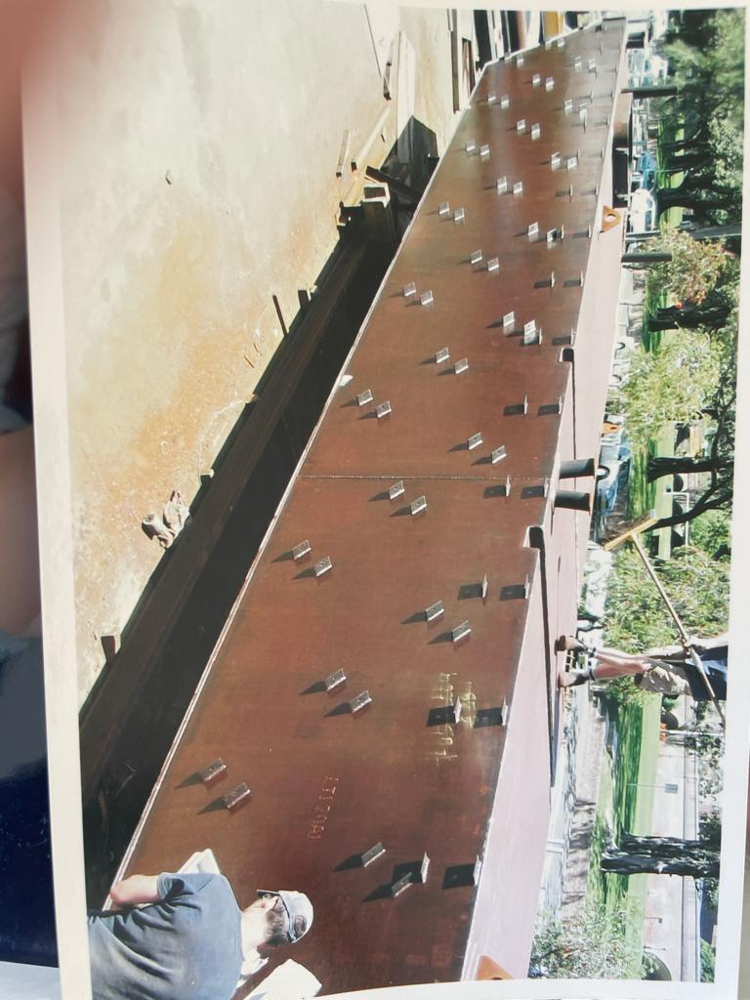
April 12, 2021
Project Lead: Peter Philipp
April 2021 Marine Works
Expert execution of april 2021 site development reflecting our industry-leading capabilities in marine engineering and infrastructure development.
Impact & Results
Delivered measurable environmental benefits through innovative engineering approaches and commitment to ecological preservation.
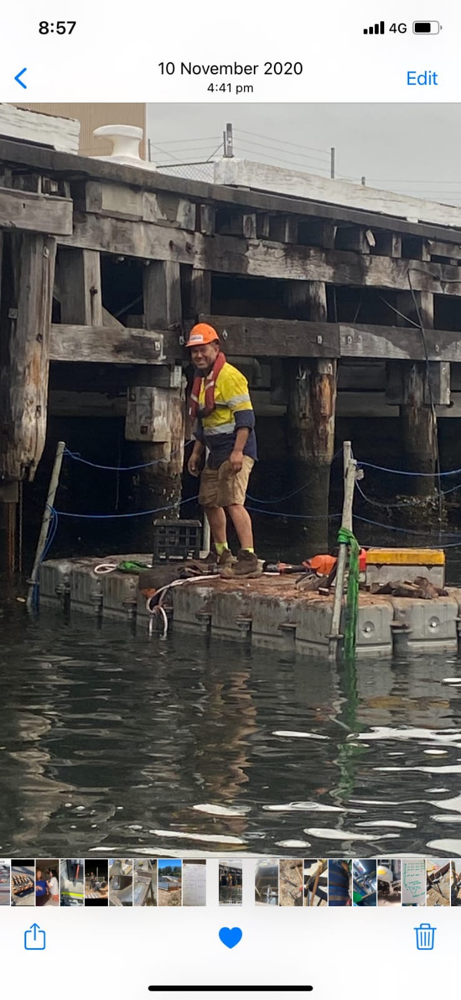
April 15, 2021
Project Lead: Waldemar Rudziejewski
April 2021 Site Development
Professional delivery of april 2021 marine installation highlighting our expertise in complex marine construction projects and dedication to quality outcomes.
Impact & Results
Strengthened maritime engineering standards while supporting local economic growth and creating lasting value for coastal communities.
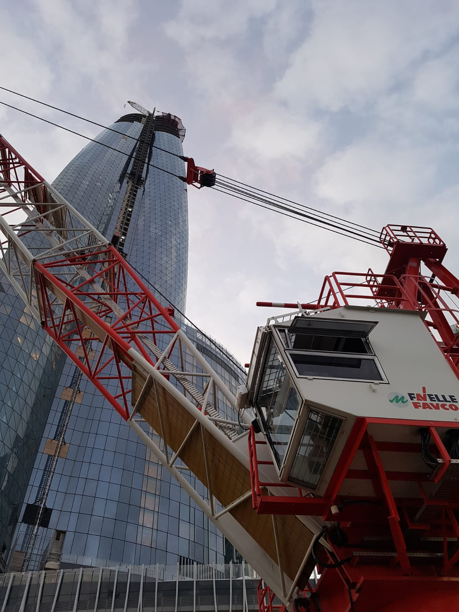
April 15, 2021
Project Lead: Matt Parnell
April 2021 Engineering Achievement
Expert execution of april 2021 construction milestone reflecting our industry-leading capabilities in marine engineering and infrastructure development.
Impact & Results
Advanced marine infrastructure capabilities, contributing to Australia's coastal development goals and environmental sustainability targets for 2021.
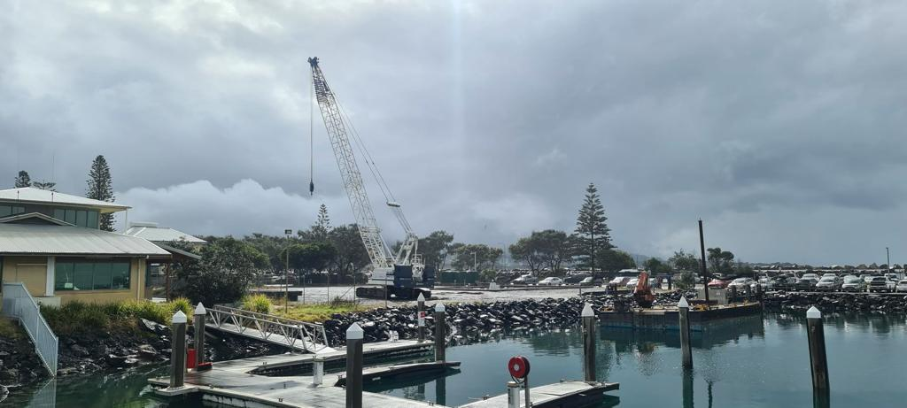
July 01, 2021
Project Lead: Peter Philipp
July 2021 Technical Implementation
Successful completion of july 2021 marine installation demonstrating our commitment to marine engineering excellence and sustainable construction practices.
Impact & Results
Contributed to regional marine infrastructure resilience while maintaining highest standards of quality and environmental stewardship.
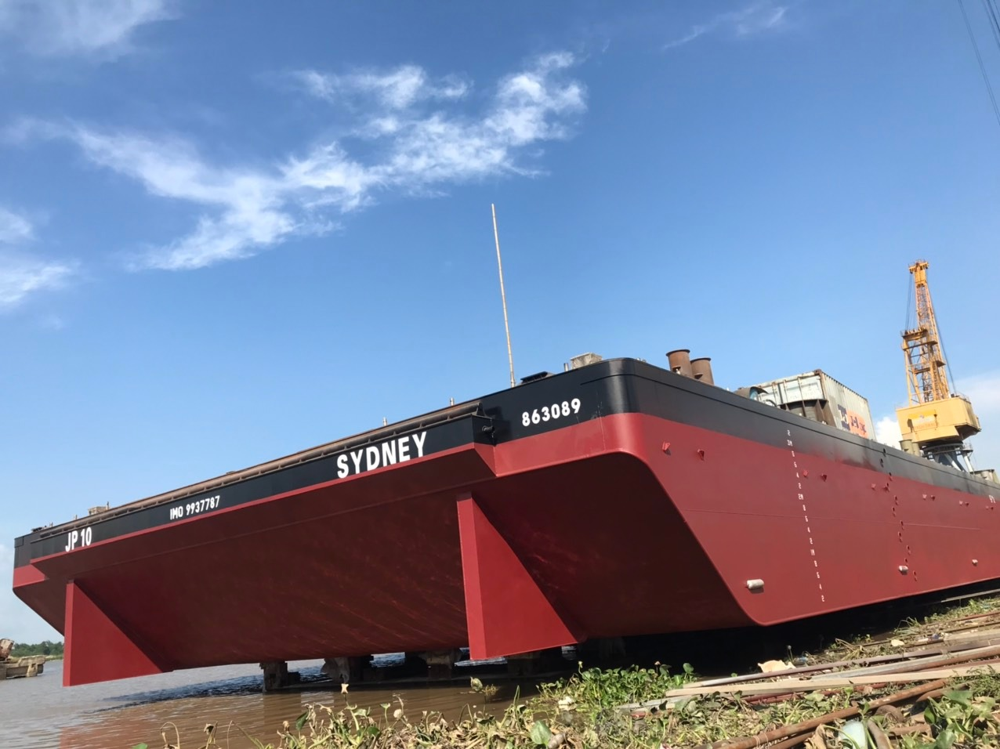
September 21, 2021
Project Lead: Peter Philipp
September 2021 Construction Milestone
Professional delivery of september 2021 infrastructure development highlighting our expertise in complex marine construction projects and dedication to quality outcomes.
Impact & Results
Advanced marine infrastructure capabilities, contributing to Australia's coastal development goals and environmental sustainability targets for 2021.
A year of exceptional productivity delivering 87 major projects across 12 months, reinforcing our position as Australia's premier marine engineering specialists.
Expert execution of january 2022 construction milestone reflecting our industry-leading capabilities in marine engineering and infrastructure development.
Impact & Results
Enhanced operational efficiency and safety protocols, establishing new industry benchmarks for sustainable marine construction practices.
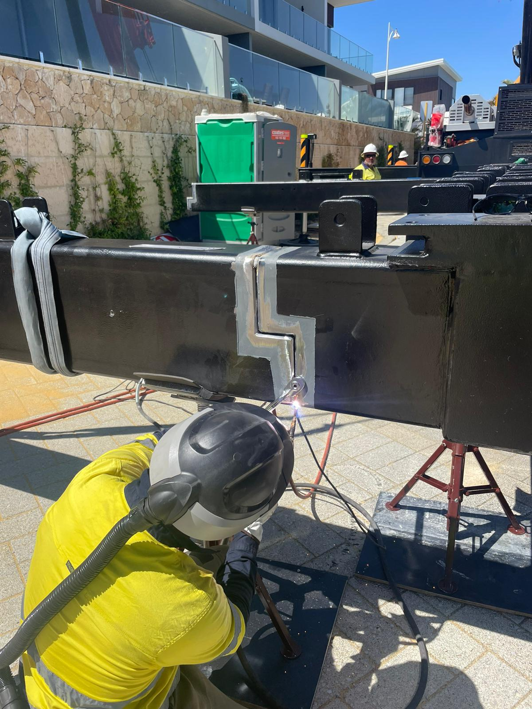
February 10, 2022
Project Lead: Adam Neville
February 2022 Marine Installation
Successful completion of february 2022 construction progress demonstrating our commitment to marine engineering excellence and sustainable construction practices.
Impact & Results
Advanced marine infrastructure capabilities, contributing to Australia's coastal development goals and environmental sustainability targets for 2022.
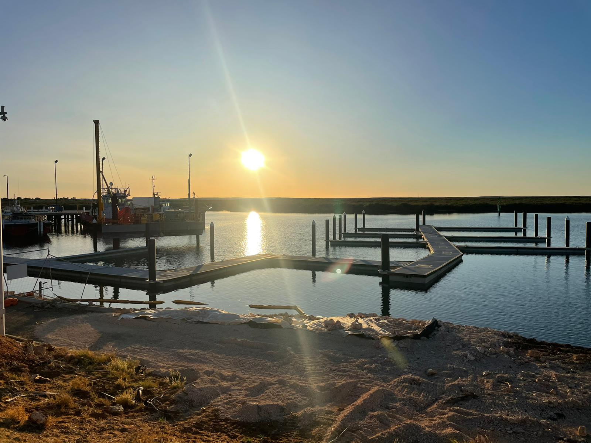
March 09, 2022
Project Lead: Jeff Offer
March 2022 Technical Implementation
Strategic implementation of march 2022 project delivery showcasing advanced technical capabilities and innovative approaches to maritime infrastructure development.
Impact & Results
Contributed to regional marine infrastructure resilience while maintaining highest standards of quality and environmental stewardship.
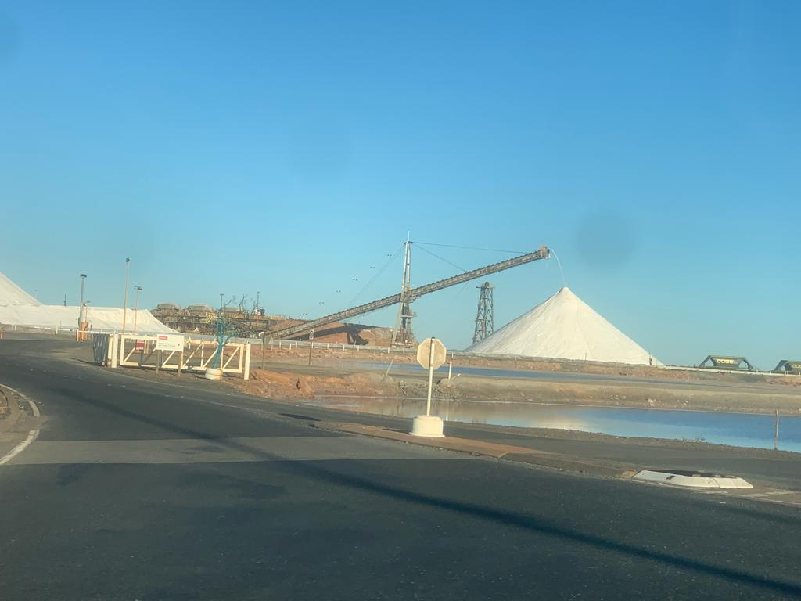
July 08, 2022
Project Lead: Peter Philipp
July 2022 Construction Progress
Professional delivery of july 2022 marine installation highlighting our expertise in complex marine construction projects and dedication to quality outcomes.
Impact & Results
Delivered measurable environmental benefits through innovative engineering approaches and commitment to ecological preservation.
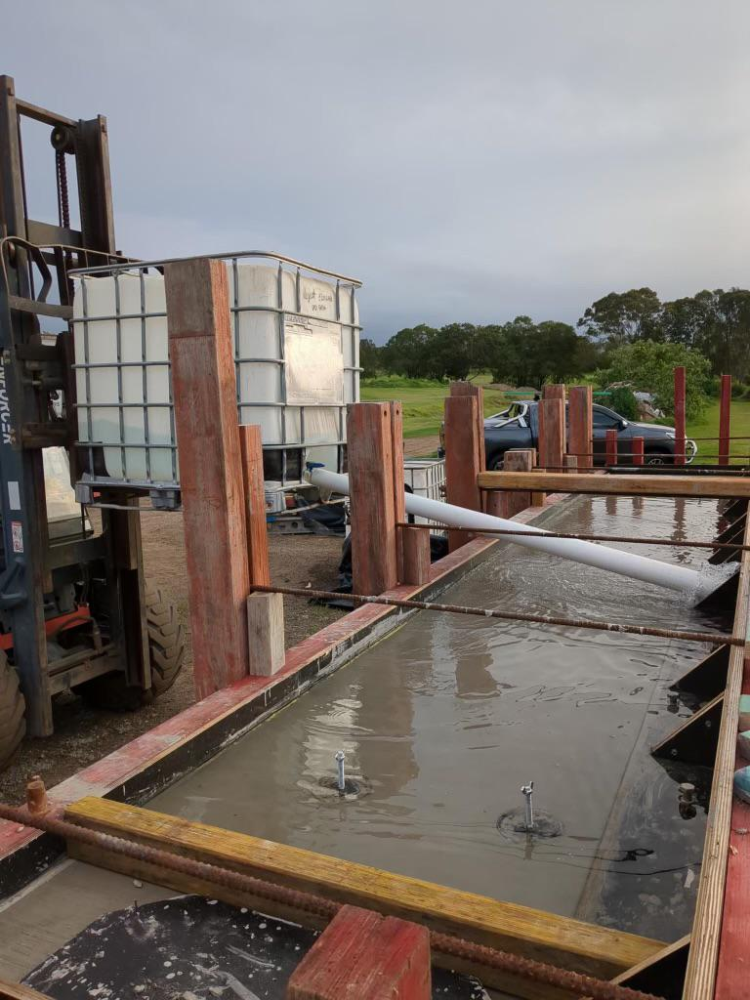
September 27, 2022
Project Lead: Peter Philipp
September 2022 Marine Installation
Successful completion of september 2022 construction milestone demonstrating our commitment to marine engineering excellence and sustainable construction practices.
Impact & Results
Enhanced operational efficiency and safety protocols, establishing new industry benchmarks for sustainable marine construction practices.
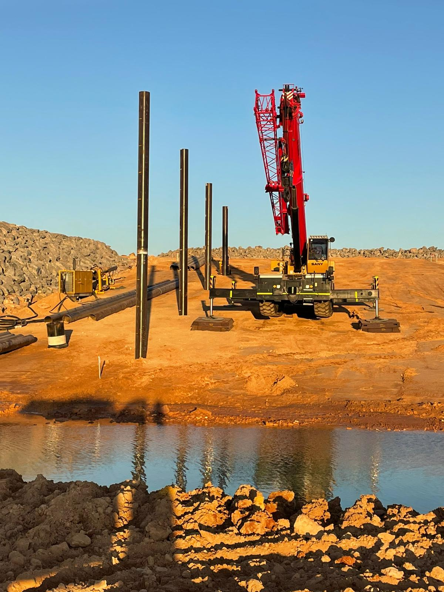
October 29, 2022
Project Lead: Mason Vickers
October 2022 Marine Installation
Expert execution of october 2022 construction progress reflecting our industry-leading capabilities in marine engineering and infrastructure development.
Impact & Results
Strengthened maritime engineering standards while supporting local economic growth and creating lasting value for coastal communities.
Strategic growth and technical advancement with 168 projects delivered over 12 months, establishing new benchmarks for Australian maritime infrastructure development.
Successful completion of january 2023 infrastructure development demonstrating our commitment to marine engineering excellence and sustainable construction practices.
Impact & Results
Strengthened maritime engineering standards while supporting local economic growth and creating lasting value for coastal communities.
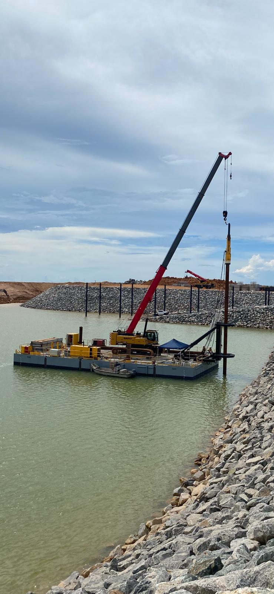
March 28, 2023
Project Lead: Mason Vickers
March 2023 Construction Milestone
Successful completion of march 2023 construction progress demonstrating our commitment to marine engineering excellence and sustainable construction practices.
Impact & Results
Delivered measurable environmental benefits through innovative engineering approaches and commitment to ecological preservation.
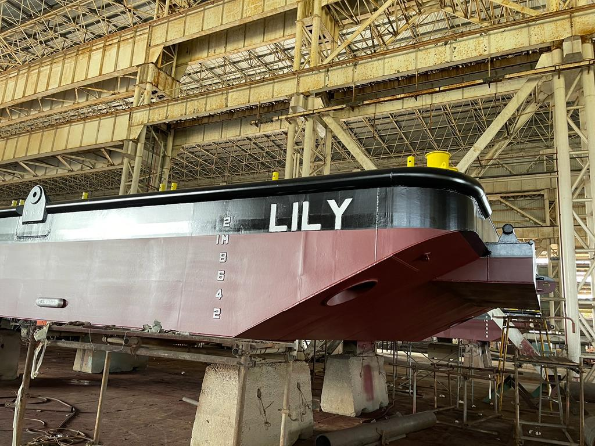
May 26, 2023
Project Lead: Peter Philipp
May 2023 Site Development
Strategic implementation of may 2023 technical implementation showcasing advanced technical capabilities and innovative approaches to maritime infrastructure development.
Impact & Results
Advanced marine infrastructure capabilities, contributing to Australia's coastal development goals and environmental sustainability targets for 2023.
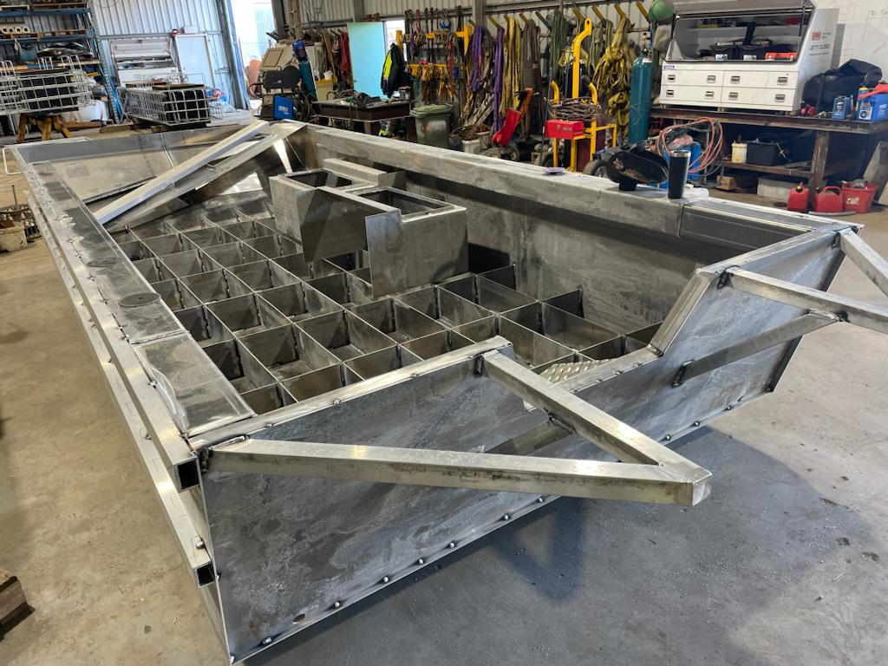
August 03, 2023
Project Lead: Peter Philipp
August 2023 Engineering Achievement
Professional delivery of august 2023 project delivery highlighting our expertise in complex marine construction projects and dedication to quality outcomes.
Impact & Results
Delivered measurable environmental benefits through innovative engineering approaches and commitment to ecological preservation.
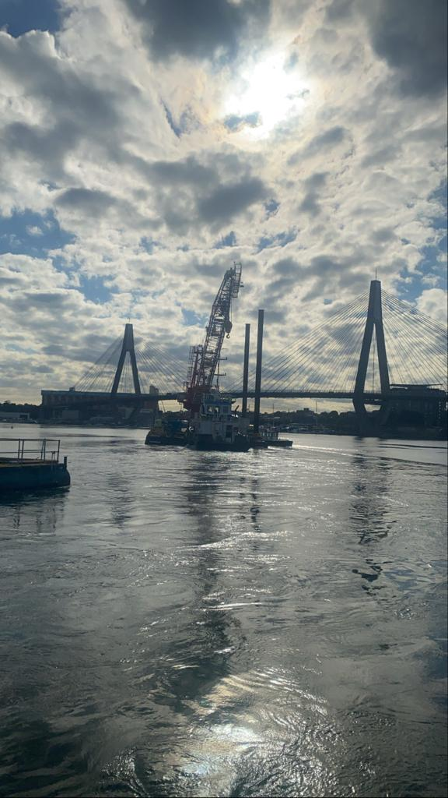
September 21, 2023
Project Lead: ~ Jayson Madeley
September 2023 Site Development
Successful completion of september 2023 infrastructure development demonstrating our commitment to marine engineering excellence and sustainable construction practices.
Impact & Results
Contributed to regional marine infrastructure resilience while maintaining highest standards of quality and environmental stewardship.
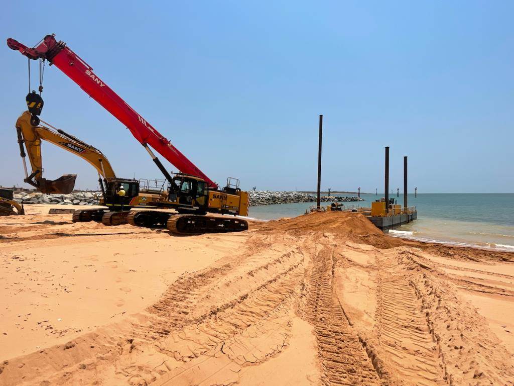
October 25, 2023
Project Lead: Peter Philipp
October 2023 Marine Works
Professional delivery of october 2023 marine works highlighting our expertise in complex marine construction projects and dedication to quality outcomes.
Impact & Results
Delivered measurable environmental benefits through innovative engineering approaches and commitment to ecological preservation.
Demonstrated marine engineering excellence through 137 successful project completions, showcasing innovative solutions and sustainable practices across 11 active months.
Professional delivery of january 2024 construction progress highlighting our expertise in complex marine construction projects and dedication to quality outcomes.
Impact & Results
Advanced marine infrastructure capabilities, contributing to Australia's coastal development goals and environmental sustainability targets for 2024.
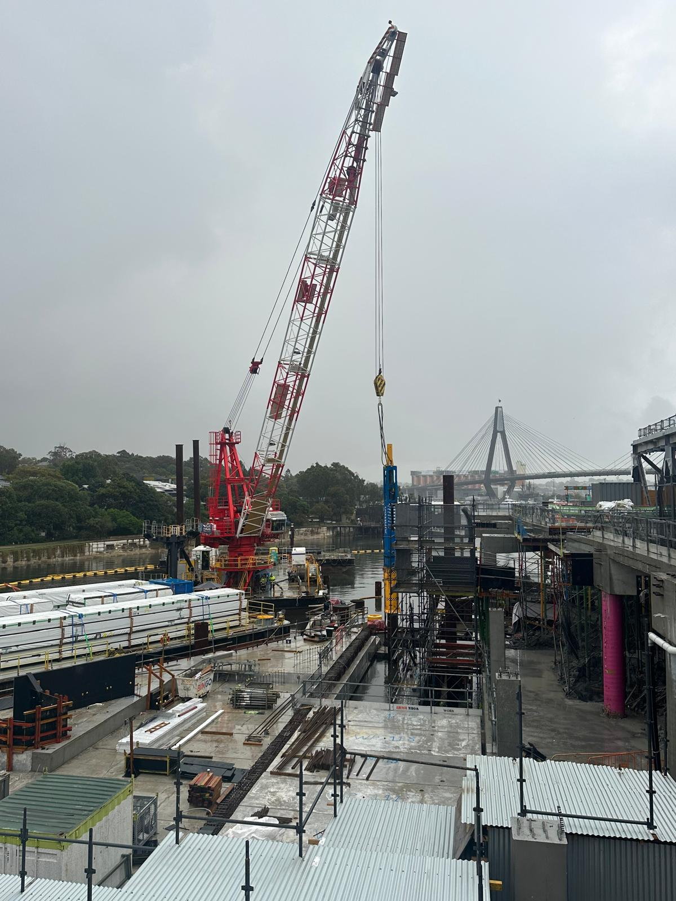
May 03, 2024
Project Lead: Chris Hickey
May 2024 Marine Works
Successful completion of may 2024 technical implementation demonstrating our commitment to marine engineering excellence and sustainable construction practices.
Impact & Results
Enhanced operational efficiency and safety protocols, establishing new industry benchmarks for sustainable marine construction practices.
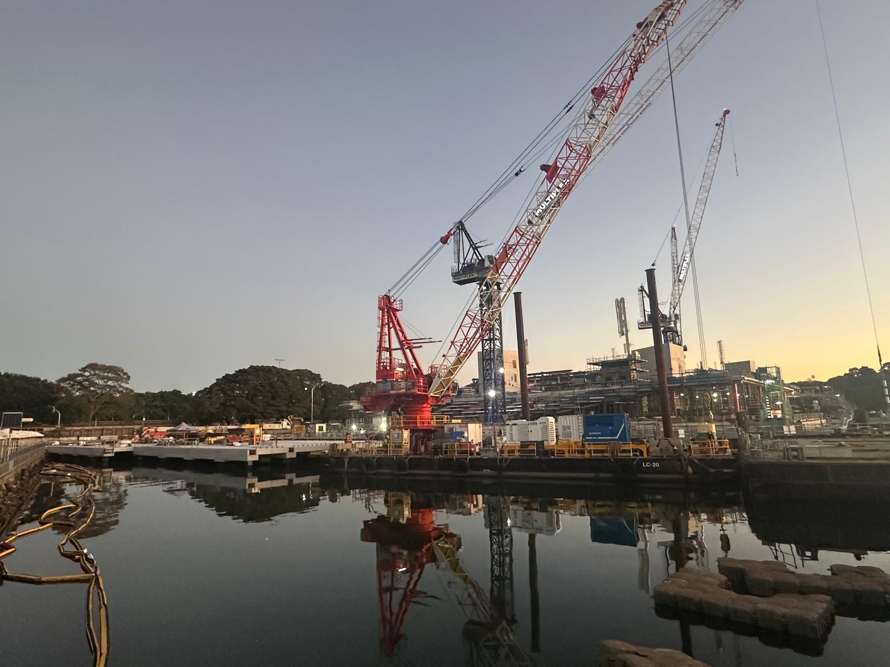
May 29, 2024
Project Lead: Chris Hickey
May 2024 Marine Installation
Strategic implementation of may 2024 site development showcasing advanced technical capabilities and innovative approaches to maritime infrastructure development.
Impact & Results
Strengthened maritime engineering standards while supporting local economic growth and creating lasting value for coastal communities.
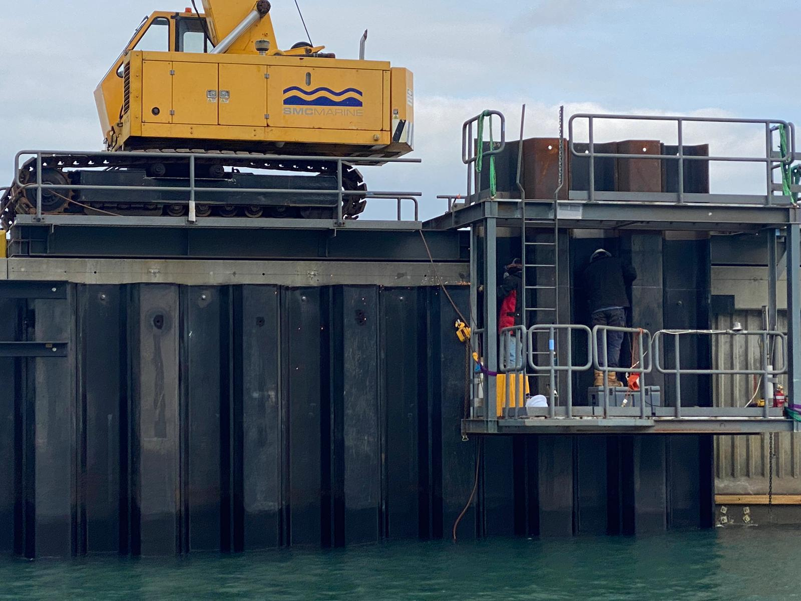
June 26, 2024
Project Lead: Martin Neville
June 2024 Construction Milestone
Professional delivery of june 2024 construction progress highlighting our expertise in complex marine construction projects and dedication to quality outcomes.
Impact & Results
Delivered measurable environmental benefits through innovative engineering approaches and commitment to ecological preservation.
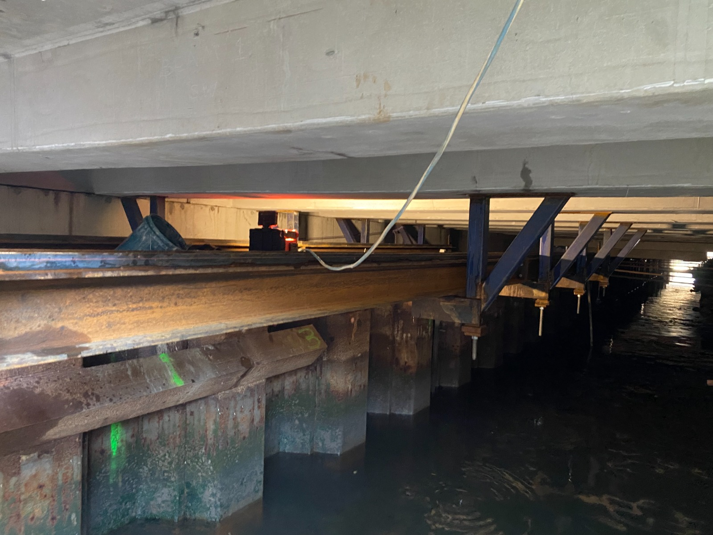
August 13, 2024
Project Lead: Angus Philipp
August 2024 Infrastructure Development
Expert execution of august 2024 engineering achievement reflecting our industry-leading capabilities in marine engineering and infrastructure development.
Impact & Results
Contributed to regional marine infrastructure resilience while maintaining highest standards of quality and environmental stewardship.
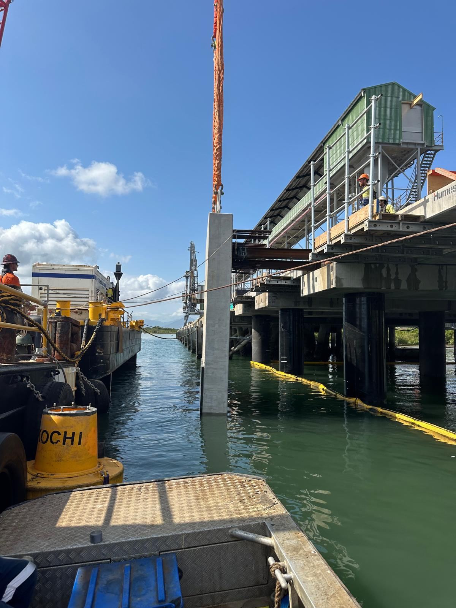
October 26, 2024
Project Lead: Alex Hickton
October 2024 Construction Progress
Expert execution of october 2024 technical implementation reflecting our industry-leading capabilities in marine engineering and infrastructure development.
Impact & Results
Enhanced operational efficiency and safety protocols, establishing new industry benchmarks for sustainable marine construction practices.
Demonstrated marine engineering excellence through 154 successful project completions, showcasing innovative solutions and sustainable practices across 6 active months.
Strategic implementation of february 2025 marine installation showcasing advanced technical capabilities and innovative approaches to maritime infrastructure development.
Impact & Results
Delivered measurable environmental benefits through innovative engineering approaches and commitment to ecological preservation.
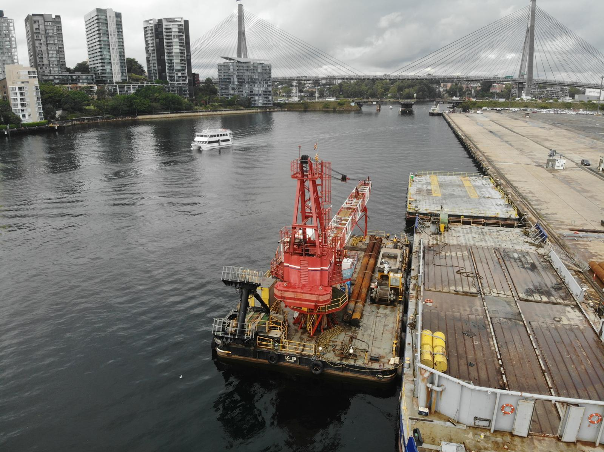
March 12, 2025
Project Lead: Angus Philipp
March 2025 Site Development
Successful completion of march 2025 technical implementation demonstrating our commitment to marine engineering excellence and sustainable construction practices.
Impact & Results
Delivered measurable environmental benefits through innovative engineering approaches and commitment to ecological preservation.
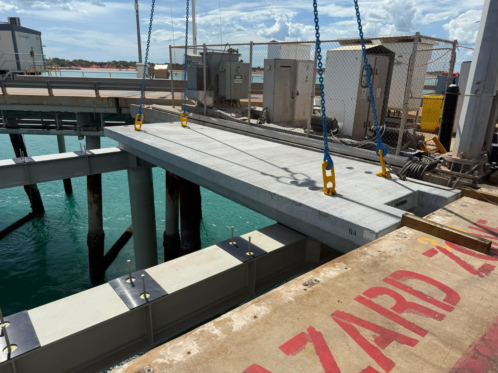
March 27, 2025
Project Lead: Lindsay Bligh
March 2025 Marine Works
Professional delivery of march 2025 site development highlighting our expertise in complex marine construction projects and dedication to quality outcomes.
Impact & Results
Enhanced operational efficiency and safety protocols, establishing new industry benchmarks for sustainable marine construction practices.
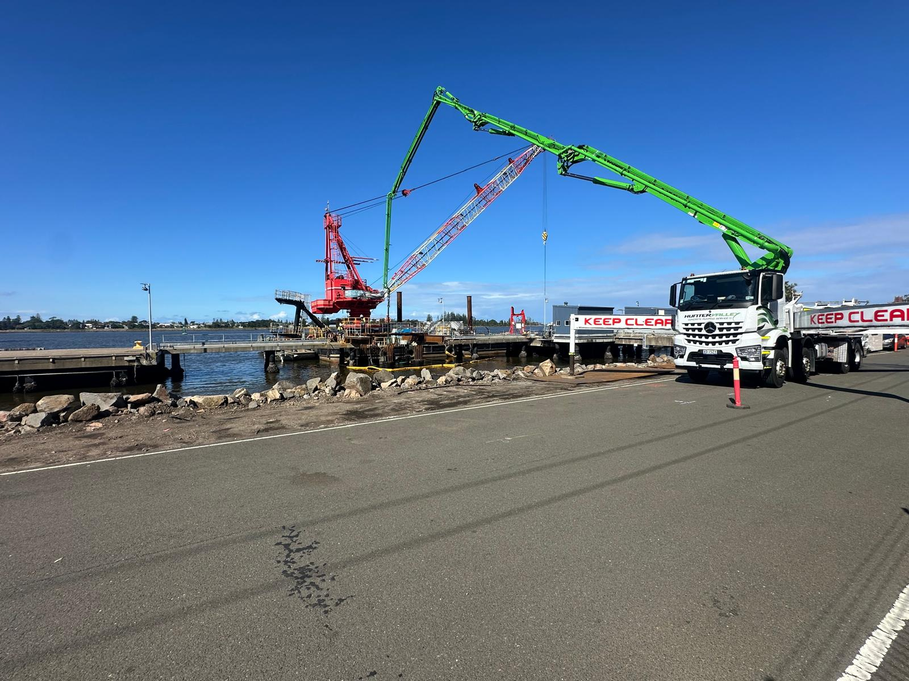
April 09, 2025
Project Lead: Chris Hickey
April 2025 Technical Implementation
Strategic implementation of april 2025 infrastructure development showcasing advanced technical capabilities and innovative approaches to maritime infrastructure development.
Impact & Results
Delivered measurable environmental benefits through innovative engineering approaches and commitment to ecological preservation.
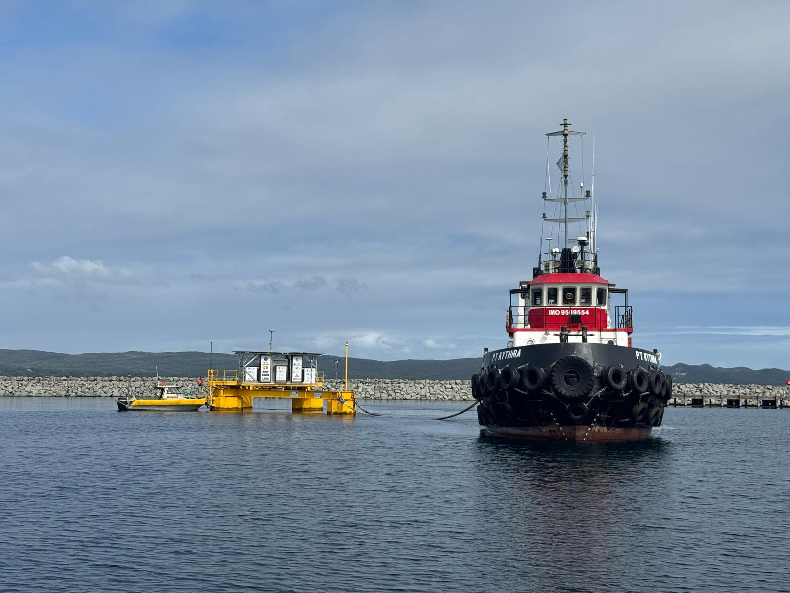
April 26, 2025
Project Lead: Manual PM WA
April 2025 Construction Milestone
Successful completion of april 2025 site development demonstrating our commitment to marine engineering excellence and sustainable construction practices.
Impact & Results
Advanced marine infrastructure capabilities, contributing to Australia's coastal development goals and environmental sustainability targets for 2025.
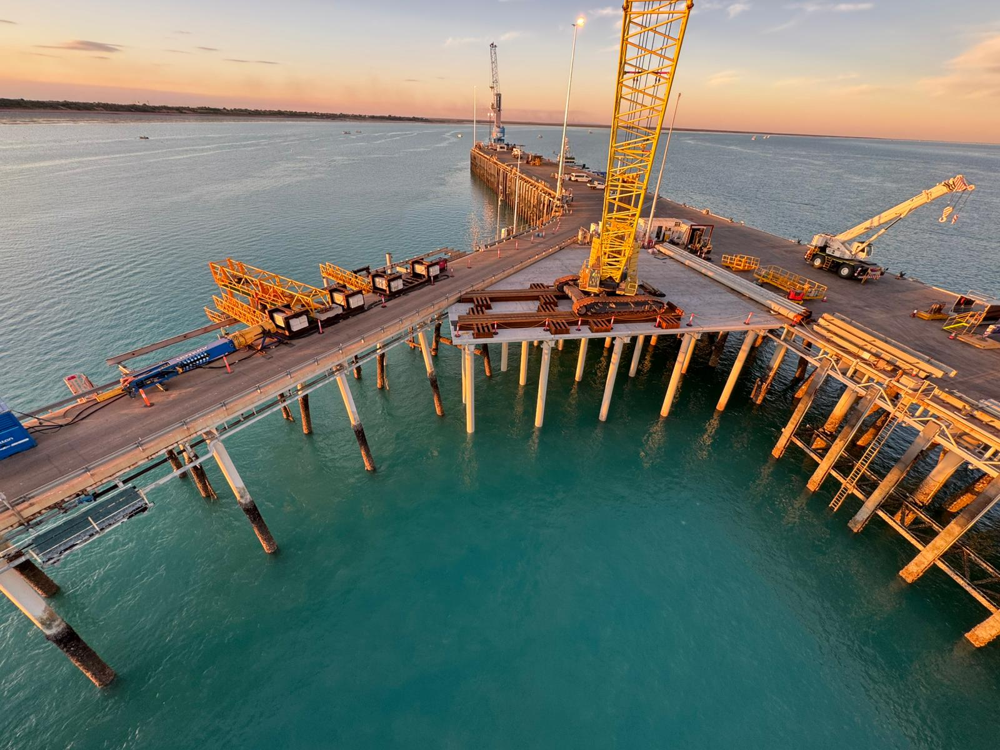
May 15, 2025
Project Lead: Lindsay Bligh
May 2025 Engineering Achievement
Professional delivery of may 2025 technical implementation highlighting our expertise in complex marine construction projects and dedication to quality outcomes.
Impact & Results
Advanced marine infrastructure capabilities, contributing to Australia's coastal development goals and environmental sustainability targets for 2025.